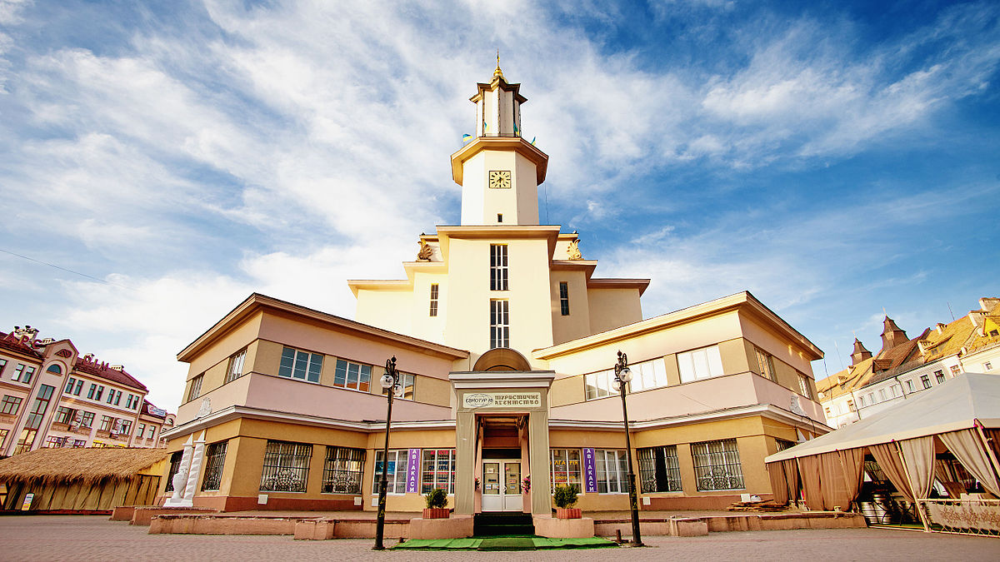
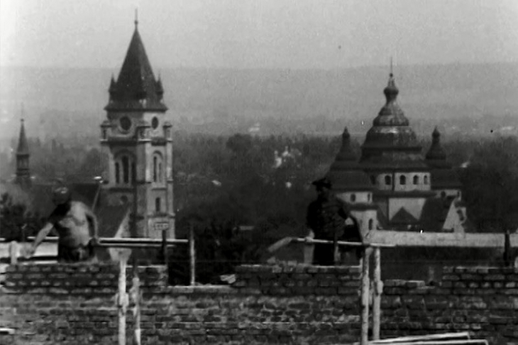

Ivano-Frankivsk (Ukrainian: Іва́но-Франкі́вськ, Russian: Ивано-Франковск; formerly Stanyslaviv,or Stanisławów; see below) is a historic city located in Western Ukraine. It is the administrative centre of Ivano-Frankivsk Oblast. Administratively, it is designated as a city of regional significance within the oblast, and together with a number of rural localities, is incorporated as Ivano-Frankivsk Municipality. Population: 230,929 (2016 est.)
History
The town of Stanisławów was founded as a fortress in order to protect the Polish–Lithuanian Commonwealth from Tatar invasions and to defend the multi-ethnic population of the region in case of armed conflicts such as the Khmelnytsky Uprising of 1648.
History
In early 1944, the city became part of the Soviet Union and was renamed 'Stanislav'. And now the city is administrative centre in Western part of Ukraine -centre of Ivano-Frankivsk Oblast.

The benefits of living in the Ivano-Frankivsk:
- Carpathian mountains are close
- Carpathian mountains are close
- Carpathian mountains are close
- Also, there are two rivers nearby
table
| 1 | 2 | 3 | 4 | 5 | 6 | 7 | 8 | 9 | 10 |
| 10 | 20 | 30 | 40 | 50 | 60 | 70 | 80 | 90 | 100 |